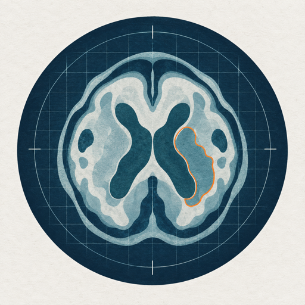

|
Yazhou Zhu
I received my Ph.D. in Computer Science and Technology from Nanjing University of Science and Technology in 2026, advised by Prof. Haofeng Zhang. Before that, I received an M.Eng. in Software Engineering from Jiangnan University and a B.Eng. from Changzhou University.
My research focuses on medical image analysis, particularly learning with limited annotation and distribution shift. My work spans cross-domain few-shot medical image segmentation, MRI/CT reconstruction and enhancement, and adaptation of vision foundation models.
I am currently seeking postdoctoral opportunities in medical image analysis, computer vision, and trustworthy medical AI.
Email /
CV /
Scholar /
GitHub /
ORCID /
DBLP
|

|
Research
I study label-efficient and domain-robust methods for medical imaging. Current interests include cross-domain few-shot segmentation, clinician-in-the-loop learning, foundation-model adaptation, uncertainty estimation, and joint reconstruction and analysis for MRI and CT.
|
Research Vision
Clinician-in-the-Loop: Learning from Rare Cases through Real-Time Interaction.
Building on my work in few-shot and cross-domain medical image segmentation, my future research explores how medical image analysis models can learn from clinicians through continuous, real-time interaction. Rather than relying solely on a fixed support set or treating clinician feedback as one-off annotation, I view each interaction as an opportunity to acquire case-specific clinical experience. When encountering rare, ambiguous, or out-of-distribution cases, the model should recognize the limits of its current knowledge, request the most informative feedback, such as clicks, boundary corrections, reference cases, or text, and immediately use that guidance to refine its prediction. With appropriate validation and safety safeguards, knowledge gained from these interactions can be retained as reusable experience for similar cases in the future. The long-term goal is a trustworthy clinician-AI loop in which models learn rapidly from expert guidance, clinicians remain in control, and valuable experience from rare cases can continuously improve medical image analysis with minimal interaction.
|
Publications
First-author publications in reverse chronological order.
|
From Few-Shot Segmentation to Clinician-in-the-Loop Medical Image Analysis
Yazhou Zhu
arXiv preprint arXiv:2609.10001, 2026
paper
|
Adversarial Prototypical Perturbation for Cross-domain Few-shot Medical Image Segmentation
Yazhou Zhu, Shidong Wang, Tong Xin, Haofeng Zhang
ACM Transactions on Multimedia Computing, Communications, and Applications, 2026
paper /
code
|
Cross-Domain Few-Shot Medical Image Segmentation via Dynamic Semantic Matching
Yazhou Zhu, Shidong Wang, Tao Zhou, Zechao Li, Haofeng Zhang, Ling Shao
IEEE Transactions on Image Processing, 2025
paper /
code
|
MAUP: Training-Free Multi-center Adaptive Uncertainty-Aware Prompting for Cross-Domain Few-Shot Medical Image Segmentation
Yazhou Zhu, Haofeng Zhang
International Conference on Medical Image Computing and Computer-Assisted Intervention (MICCAI), 2025
paper /
code
|
RobustEMD: Domain Robust Matching for Cross-domain Few-shot Medical Image Segmentation
Yazhou Zhu, Minxian Li, Qiaolin Ye, Shidong Wang, Tong Xin, Haofeng Zhang
Artificial Intelligence in Medicine, 2025
paper /
code
|
Partition-A-Medical-Image: Extracting Multiple Representative Subregions for Few-Shot Medical Image Segmentation
Yazhou Zhu, Shidong Wang, Tong Xin, Zheng Zhang, Haofeng Zhang
IEEE Transactions on Instrumentation and Measurement, 2024
paper /
code
|
Learning De-biased Prototypes for Few-Shot Medical Image Segmentation
Yazhou Zhu, Ziming Cheng, Shidong Wang, Haofeng Zhang
Pattern Recognition Letters, 2024
paper
|
Few-Shot Medical Image Segmentation via a Region-Enhanced Prototypical Transformer
Yazhou Zhu, Shidong Wang, Tong Xin, Haofeng Zhang
International Conference on Medical Image Computing and Computer-Assisted Intervention (MICCAI), 2023
paper /
code
|
DESN: An Unsupervised MR Image Denoising Network with Deep Image Prior
Yazhou Zhu, Xiang Pan, Tianxu Lv, Yuan Liu, Lihua Li
Theoretical Computer Science, 2021
paper
|
Denoising of Magnetic Resonance Images with Deep Neural Regularizer Driven by Image Prior
Yazhou Zhu, Xiang Pan, Jing Zhu, Lihua Li, Yuan Liu
IEEE International Conference on Data Science and Advanced Analytics (DSAA), 2020
paper
|
Multi-scale Strategy Based 3D Dual-Encoder Brain Tumor Segmentation Network with Attention Mechanism
Yazhou Zhu, Xiang Pan, Jing Zhu, Lihua Li
IEEE International Conference on Bioinformatics and Biomedicine (BIBM), 2020
paper
|
|